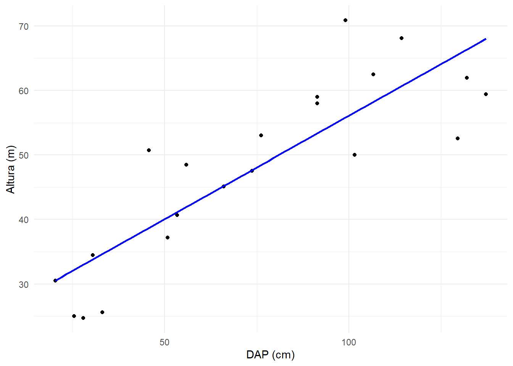
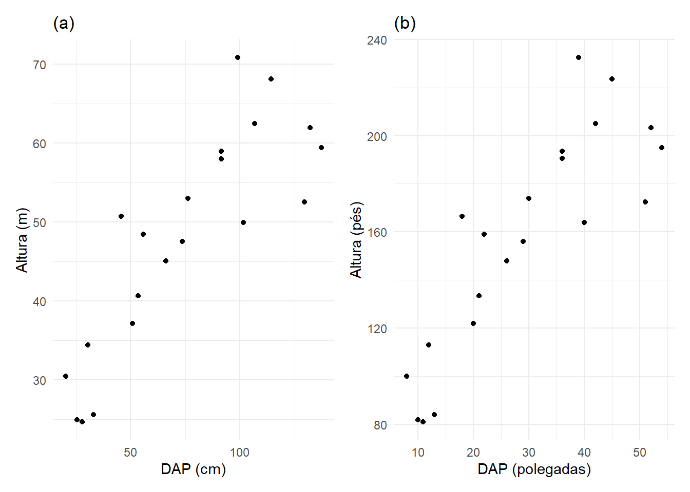

Na aula de hoje vamos conhecer o modelo de regressão linear simples (MRLS). Serão apresentados a forma geral do modelo e sua interpretação, e o método de Mínimos Quadrados (MMQ) para estimação dos parâmetros.
Essa aula é baseada no capítulo 6 de Linear Models in Statistics (Rencher e Schaalje, 2008), nos capítulos 1 e 2 de Charnet et al. (2008) e no capítulo 7 de Introduction to Modern Statistics (2e)
2.1 Um exemplo: Relação entre altura e DAP de sequoias
(Adaptado de Levine et al., 2016)
Medir a altura de determinadas espécies de árvores pode ser um grande desafio, como é o caso das sequoias gigantes originárias da Califórnia que podem ultrapassar 90 metros. Especialistas entendem que a altura de uma sequoia gigante está relacionada com outras características da árvore, incluindo o diâmetro da árvore na altura do peito de uma pessoa (DAP). A base de dados que utilizaremos a seguir contém a altura (m) e o DAP (cm) para uma amostra de 21 árvores do tipo sequoia.
Sequoias no Parque Nacional das Sequoias, California. Foto de Jeff Hollett, Domínio público. flic.kr/p/2rdVxgY
LEVINE, D. M., STEPHAN, D. F., SZABAT, K. A. (2016) Estatística - teoria e aplicações usando o Microsoft Excel em Português. Tradução e revisão técnica Teresa Cristina Padilha de Souza. 7 ed. Rio de Janeiro: LTC, 2016.
Uma maneira de visualizar a relação entre essas duas variáveis é por meio de um gráfico de dispersão.
Figure 2.1: Gráfico de dispersão para altura (m) e DAP (cm) de 21 sequoias.
A relação entre as variáveis não é perfeitamente linear, mas uma linha reta pode ser usada para descrever, ao menos parcialmente, essa associação. Para isso, consideramos DAP como variável explicativa (\(x\)) e altura da árvore como resposta (\(y\)).
ggplot(sequoia, aes(x = dap_cm, y = altura_m)) +geom_point() +geom_smooth(method ="lm", se =FALSE, color ="blue")+labs(x ="DAP (cm)",y ="Altura (m)" ) +theme_minimal()

Figure 2.2: Um modelo linear para representar a relação entre altura (m) e DAP (cm) de sequoias.
A equação do modelo linear representado na Figure 3.2 é dada por:
\[
\hat{y} = 24,01 + 0,32x
\]
O “chapéu” em \(y\) é usado para indicar que isso é uma estimativa. Por exemplo, pela equação podemos fazer a predição de que uma árvore com DAP de 57 cm terá uma altura de:
\[
\hat{y} = 24,01 + 0,32\times57 = 42,25
\] Essa estimativa pode ser vista como uma média: a equação prevê que árvores com DAP de 57 cm terão uma altura média de 42,25.
Outras variáveis podem ser consideradas no modelo para a predição da altura das árvores, o que caracterizaria um modelo de regressão linear múltipla. Mas vamos começar nosso estudo pelo caso mais simples, com apenas um preditor, ou seja, compreendendo o Modelo de Regressão Linear Simples.
2.2 O Modelo de regressão linear simples
Considere uma variável aleatória \(Y\), usualmente denominada variável resposta, e uma variável \(X\), que chamaremos de variável explicativa.
O modelo de regressão linear simples (MRLS) descreve \(Y\) como a soma de uma quantidade determinística e uma aleatória. A parte determinística é uma reta em função de X que representa a informação esperada sobre \(Y\) dado o conhecimento de \(X\). A parte aleatória, chamada erro, representa os inúmeros fatores que podem interferir em \(Y\) e provoca uma distorção sobre a parte determinística. Erros positivos e negativos podem ocorrer, mas supomos que a variável erro tem esperança igual a zero. Também supomos que sua variância não depende do valor específico de \(X\) e supomos que o modelo de probabilidade do erro é o modelo normal.
O MRLS pode ser escrito, de forma geral, por:
\[
Y = \beta_{0} + \beta_{1}x + \varepsilon
\] em que \(\beta_{0}\), \(\beta_{1}\) e \(x\) são constantes, \(\varepsilon\) é normal com esperança \(0\) e variância \(\sigma^{2}\), isto é, \(\varepsilon \sim \textrm{N}(0; \sigma^{2})\).
Charnet et al. (2008) Análise de Modelos de Regressão Linear: com aplicações. Campinas: Editora Unicamp.
Resultado 1. Considere o modelo de regressão linear simples com a suposição de normalidade do erro. A distribuição de probabilidade de \(Y\), correspondente ao valor prefixado, \(x\), de \(X\), é:
\[
Y \sim \textrm{N}(\beta_{0} + \beta_{1}x; \sigma^{2}).
\] Dessa forma, podemos interpretar o parâmetro \(\beta_{1}\) como a mudança esperada em \(Y\) correspondente à variação de uma unidade em \(X\).
1. Prove o Resultado 1.
Anteriormente, apresentamos o MRLS como se os parâmetros do modelo fossem conhecidos e as suposições atendidas. Agora, vamos pensar no problema de inferência estatística. Para isso, partimos da definição de uma amostra aleatória que será a base para a estimação do modelo e, após verificação das pressuposições do modelos, o objetivo será fazer inferências para a população geral.
Na obtenção da amostra, podemos considerar duas situações: valores de \(X\) prefixados e para estes valores obtenção de observações independentes de \(Y\), ou obtenção de uma amostra aleatória (\(X\), \(Y\)) biavariada. Para \(n\) observações, o modelo pode ser escrito como:
Além das pressuposições já apresentadas e considerando o modelo de probabilidade do erro como sendo o modelo normal, acrescentamos a pressuposição de que os erros associados às observações são não correlacionados entre eles, ou seja, \(\textrm{Cov}[\varepsilon_{i}, \varepsilon_{j}] = 0\), para todo \(i \neq j\), \(i, j = 1, \ldots, n\).
Os pressupostos do modelo em inglês podem ser lembrados pela mnemônica LINE (Çetinkaya-Rundel e Hardin, 2024, seção 24.6):
L: linear model
I: independent observations
N: errors normally distributed
E: equal variability
A linearidade, normalidade e igualdade de variâncias podem ser verificadas por meio de gráficos de resíduos. Um análise do tipo ou delineamento de estudo pode ser feita para avaliar o pressuposto de independência entre as observações.
Após a obtenção da amostra, definimos estimadores para os parâmetros do modelo. Inicialmente, apresentaremos o método de Mínimos Quadrados (MMQ) que é estritamente matemático e não depende das pressuposições apresentadas anteriormente. Entretanto, veremos mais adiante que, se as pressuposições são válidas, os estimadores de \(\beta_{0}\) e \(\beta_{1}\) obtidos por esse método possuem propriedades estatísticas interessantes.
2.3 Estimação por Mínimos Quadrados
Ao ajustar um MRLS temos o problema de escolher uma reta que se ajusta ao conjunto de \(n\) pontos \((x_{1}, y_{1}), (x_{2}, y_{2}), \ldots, (x_{n}, y_{n})\). Para obter as estimativas \(\hat{\beta_{0}}\) e \(\hat{\beta_{1}}\) nós usamos o método de mínimos quadrados, que é livre de qualquer pressuposição em relação à distribuição.
Por meio dessa abordagem, nós buscamos estimadores \(\hat{\beta_{0}}\) e \(\hat{\beta_{1}}\) que minimizam a soma de quadrados dos desvios \(y_{i} - \hat{y_i}\) dos \(n\) valores observados \(y_{i}\) em relação aos seus valores preditos \(\hat{y_i} = \hat{\beta_{0}} + \hat{\beta_{1}}x_{i}\), isto é,
Para encontrar os valores de \(\hat{\beta_0}\) e \(\hat{\beta_1}\) que minimizam \(\sum_{i=1}^{n} \hat{\varepsilon_{i}}^2\), nós derivamos essa equação em relação a \(\beta_0\) e \(\beta_1\) e igualamos as derivadas a 0.
Sejam \(\hat{y_i} = \hat{\beta_0} + \hat{\beta_1}x_{i}\), para \(i=1, \ldots, n\) os valores da reta de mínimos quadrados, ajustada ao conjunto de \(n\) pares \((x_{1}, y_{1}), (x_{2}, y_{2}), \ldots, (x_{n}, y_{n})\). As quantidades \(e_{i} = y_{i} - \hat{y_i}\), para \(i=1, \ldots, n\) são denominadas resíduos
2. (Charnet et al., 2008) Usando o método de Mínimos Quadrados, encontre um MRLS e os resíduos para os seguintes pares de valores.
x
1
1
2
2
3
3
y
1
3
1
3
1
3
3. (Charnet et al., 2008) Usando o método de Mínimos Quadrados, encontre um MRLS e os resíduos para os seguintes pares de valores.
x
1
2
2
3
3
4
y
1
1
2
2
3
3
4. Obtenha os gráficos de dispersão com os pares de pontos e as retas estimadas nos exercícios 1 e 2.
2.3.2 Expressões simplificadas
Apresentamos a seguir alguns resultados úteis na simplificação de cálculos de várias expressões. Considerando que \(\bar{x} = \frac{1}{n}\sum^{n}_{i=n} x_{i}\), temos:
Observando o denominador de \(\hat{\beta_1}\), nota-se que a solução (única) do sistema de equações normais existe, desde que os valores de \(x_{i}\) não sejam todos iguais.
5. (Charnet et al., 2008) Usando o conjunto de dados do Exercício 2, mostre os Resultados 2, 3 e 4.
O modelo obtido por mínimos quadrados passa pelo ponto \((\bar{x}, \bar{y})\).
6. O modelo linear ajustado para os dados de sequoias foi \(\hat{y} = 24,01 + 0,32x\). Baseado nessa reta, calcule o resíduo da observação (101,60; 49,99).
7. O modelo linear ajustado para os dados de sequoias foi \(\hat{y} = 24,01 + 0,32x\). Baseado nessa reta, calcule o resíduo da observação (99,06; 70,87).
2.4 Medidas de associação linear
2.4.1 O coeficiente de correlação
Voltando aos dados de sequoias, na Figure 3.1 notamos uma relação positiva entre as variáveis, ou seja, o aumento nos valores de DAP parece estar associado ao aumento nos valores de altura das árvores.
Em muitas situações é de interesse quantificar o grau de associação entre duas variáveis, \(X\) e \(Y\). Quando ambas as variáveis são aleatórias, uma medida da força de associação linear entre elas é o coeficiente de correlação.
A correlacão é sempre um valor entre -1 e 1;
quanto maior a tendência de uma relação linear positiva, a correlação tem valor mais próximo de 1;
quanto maior a tendência de uma relação linear negativa, a correlação tem valor mais próximo de -1;
quando a correlação está próxima de zero não existe relação linear.
Com base em uma amostra aleatória \((x_{1}, y_{1}), (x_{2}, y_{2}), \ldots, (x_{n}, y_{n})\) de \((X, Y)\), o coeficiente de correlação amostral pode ser definido da seguinte forma:
Com essa notação, a correlação amostral é dada por:
\[
r = \frac{S_{xy}}{\sqrt{S^{2}_x S^{2}_y}}
\]
O coeficiente de correlação não possui unidade de medida e não será afetado por uma transformação linear nas unidades de medida das variáveis.

Figure 2.3: Gráficos de dispersão para os dados de sequoias com unidades em metros e centímetros (a) e unidades em pés e polegadas (b). Em ambos os conjuntos de dados, \(r=0,85\).
2.4.2 O coeficiente de determinação
Enquanto o coeficiente de correlação mede a força da relação linear entre duas variáveis, o coeficiente de determinação (\(R^{2}\)) é usado para medir a força do ajuste de um modelo linear. Ele fornece a proporção da variação em \(Y\) que é explicada pelo modelo ou, de forma equivalente, atribuída à regressão em \(x\). Em um MRLS, o coeficiente de determinação corresponde exatamente ao quadrado do coeficiente de correlação. Como \(r\) está entre -1 e 1, o \(R^{2}\) estará sempre entre 0 e 1.
De forma mais geral, \(R^{2}\) pode ser calculado como a razão entre uma medida da variabilidade em torno da reta e uma medida da variabilidade total.
8. Se a correlação calculada entre DAP (cm) e altura (m) foi igual a 0,85, quanto da variação na resposta é explicada pela variável preditora?
No decorrer do curso, vamos aprofundar nos aspectos inferenciais (estimação e testes para parâmetros) e detalhar assuntos que foram brevemente discutidos nessa aula, como a análise de resíduos. Isso será feito considerando um cenário mais amplo e com suporte em álgebra matricial para contemplar tanto o MRLS quanto o Modelo de Regressão Linear Múltipla (MRLM).
Estude as provas dos Resultados 2 a 9 em Charnet et al. (2008).
Agresti, Alan. 2007. An Introduction to Categorical Data Analysis. 2nd ed. Hoboken: John Wiley & Sons.
———. 2012. Categorical Data Analysis. 3rd ed. Hoboken, NJ: John Wiley & Sons.
Allison, Paul D. 1999. Logistic Regression Using the SAS System: Theory and Application. Cary: SAS Institute Inc.
Çetinkaya-Rundel, Mine, and Johanna Hardin. 2023. Introduction to Modern Statistics. 2nd ed. OpenIntro Inc. https://openintro-ims.netlify.app/.
Charnet, Reinaldo, Clarice Azevedo de Luna Freire, Eugênia Maria R. Charnet, and Helio Bonvino. 2008. Análise de Modelos de Regressão Linear: Com Aplicações. 2nd ed. Campinas: Editora Unicamp.
Cordeiro, Gauss M., Clarice G. B. Demétrio, and Rafael A. Moral. 2024. Modelos Lineares Generalizados e Aplicações. São Paulo: Blucher.
Demétrio, Clarice G. B., and S. S. Zocchi. 2011. Modelos de Regressão. Piracicaba: ESALQ.
Draper, Norman R., and Harry Smith. 1998. Applied Regression Analysis. 3rd ed. New York: John Wiley & Sons.
Ferreira, Daniel Furtado. 2013. Recursos Computacionais Utilizando r. Lavras.
Hoffmann, Rodolfo, and Sonia Vieira. 1977. Análise de Regressão: Uma Introdução à Econometria. 2nd ed. São Paulo: Editora Hucitec.
Kutner, Michael H., Christopher J. Nachtsheim, John Neter, and William Li. 2005. Applied Linear Statistical Models. 5th ed. New York: McGraw-Hill/Irwin.
Levine, David M., David F. Stephan, and Kathryn A. Szabat. 2016. Estatı́stica - Teoria e Aplicações Usando o Microsoft Excel Em Português. 7th ed. Rio de Janeiro: LTC.
Mallows, Colin L. 1973. “Some Comments on \(C_p\).”Technometrics 15 (4): 661–75.
Morais, Augusto Ramalho de, Lı́via Maria Chaves, and Maria Cristina R. P. Toledo. 2001. Introdução àálgebra de Matrizes. Lavras: UFLA/FAEPE.
Noble, Ben, and James W. Daniel. 1977. Applied Linear Algebra. 3rd ed. Englewood Cliffs: Prentice-Hall.
Regazzi, Adair José. 2010. Modelos Lineares i. Viçosa: UFV.
Rencher, Alvin C., and G. Bruce Schaalje. 2008. Linear Models in Statistics. 2nd ed. Hoboken, New Jersey: John Wiley & Sons.
Santos, Reginaldo J. 2017. Um Curso de Geometria Analı́tica e álgebra Linear. Belo Horizonte: Imprensa Universitária da UFMG.
Searle, Shayle R. 1982. Matrix Algebra Useful for Statistics. New York: John Wiley & Sons.